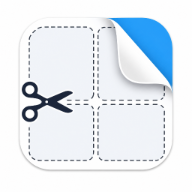

Contact Hub Pro
Personal contact manager with message composer, templates, and WhatsApp integration — built for quick, personalized outreach.
Small tools built for personal use. No install, no cloud, no fuss — just open and get things done.
Personal contact manager with message composer, templates, and WhatsApp integration — built for quick, personalized outreach.
Lokaler Audio-Konverter mit Transkript-Funktion — Audiodateien schnell umwandeln, bearbeiten und Text daraus extrahieren.
Teleprompter für Vorträge und Präsentationen — mit anpassbarer Lesegeschwindigkeit, Timer und klarer, fokussierter Ansicht.

Schneller, druckfertiger Etiketten-Generator für Haushalt, Organisation und alles, was eine klare Beschriftung braucht.
QR-Codes für den Alltag erstellen, anpassen und exportieren — zum Beispiel für WLAN, vCards, IBAN und mehr.